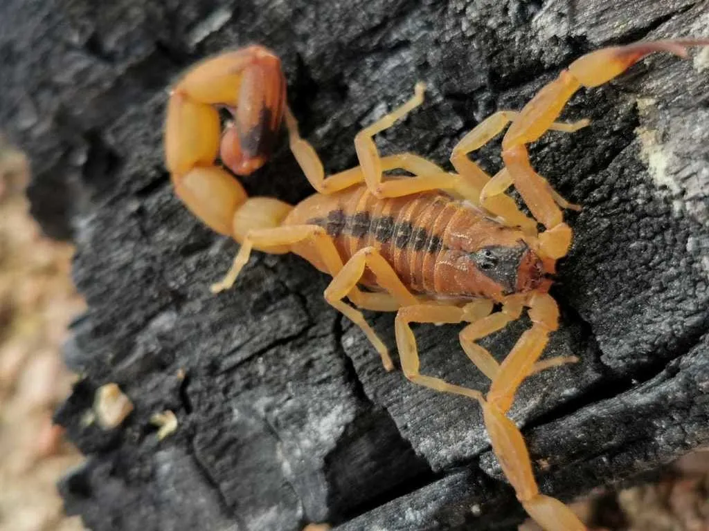

Tityus stigmurusIdentificação
O escorpião-amarelo-do-nordeste apresenta coloração amarelada, geralmente com faixa ou manchas escuras bem visíveis no dorso, característica importante para sua diferenciação.
Peçonhento?
Sim, possui peçonha e apresenta elevada importância médica, podendo causar acidentes graves e necessitando de atendimento imediato em casos de envenenamento.
Importância ecológica
Assim como outras espécies de escorpiões, atua no controle populacional de insetos e outros pequenos invertebrados, contribuindo para o equilíbrio ecológico.
Espécie comum na região Nordeste, devendo-se evitar o contato direto e buscar manejo seguro quando encontrada em áreas residenciais.